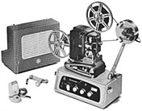
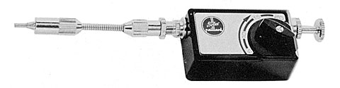
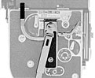
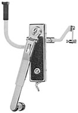
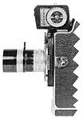
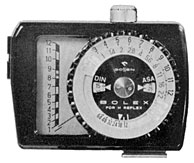
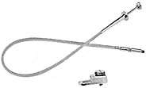

Miscellaneous Accessories

SonorizerIntroduced in 1960 and manufactured in Germany, the Sonorizer allowed sound to be added to 8mm films. Narration, sound effects or music could be recorded onto film with a magnetic stripe while the film was being projected. The device consisted of an amplifier, sound head, speaker and directional microphone. Film from the feed reel of the projector was threaded through the sound head and back through the gate. This sound head allowed an audio track to be played, erased or recorded. The amp and speaker could be latched together to form a portable unit with handle, measuring 10" x 12" x 14 1/2" and weighing approximately 28 1/2 pounds.

Automatic SelftimerThis accessory was introduced in 1962. It was designed to trigger the camera release within 6 seconds of setting the timing mechanism, and allowed the user to enter the picture. The timer can be adjusted to film a scene from 5 to 20 seconds in length. It fits into the cable release socket of any pocket size 8mm camera, or any H camera with a cable release adapter.

Rexofader 40
The Rexofader 40 operated in the same way as the original Rexofader,
but was redesigned with a larger lever that could be operated with the left
hand, while the right hand operated the camera release. [1]
The device was used on H-16 REX cameras to operate the variable shutter, creating
timed fades of 40 frames. These are marked "H16-40" on the lever.

Rexofader 32
For H-8 REX cameras, a new Rexofader was designed to produce timed fades of
32 frames. It is attached to the side of the camera, and operates in the same
manner as the other Rexofaders. This H-8 version can be identified by the
name "H8-32", located on the lever.
1 Bolex H8-H16 Catalogue (New Jersey: Paillard Incorporated, July 1964), 18.

Gossen Light Meter for BolexGossen manufactured this light meter for Paillard in 1964. It was calibrated for the shutter speeds of the REX cameras and measured both reflected and incident light. It used a PX-13 battery and had a sensitivity of 6 to 1600 ASA, with settings for camera speeds from 12-24 frames per second and variable shutter openings. All H model cameras manufactured after 1962 contained an accessory attachment shoe located above the turret; the side of the Gossen meter was designed to fit into this slot.


H-20 Cable Release:A 20 inch cable release; all metal construction, with a Paillard Bolex logo at the trigger tip. A new style adapter was introduced to allow continuous or single frame filming with the Rexofader attached.
H-40 Cable Release:
Same as the H-20, but 40 inches long.